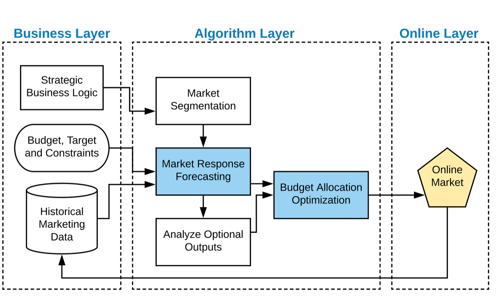
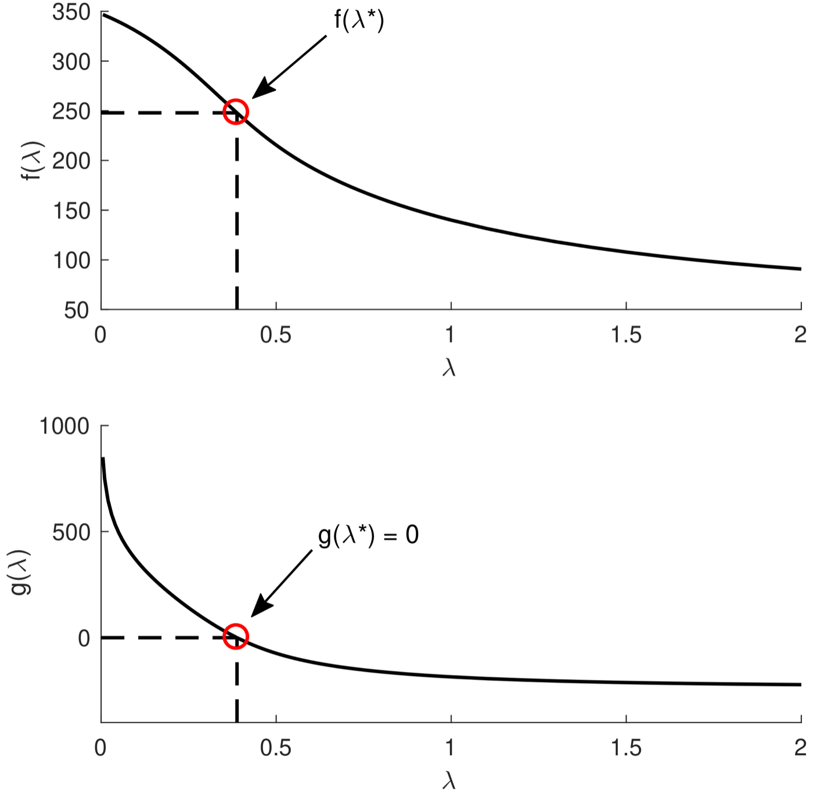
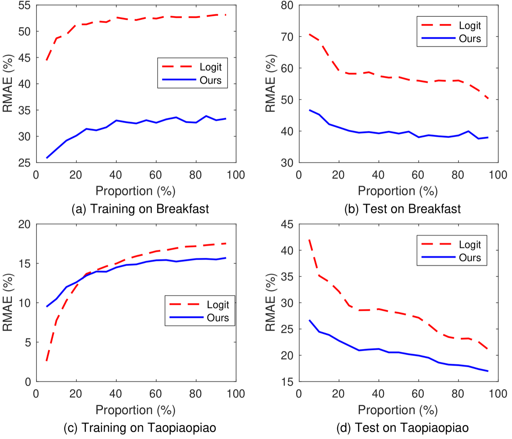
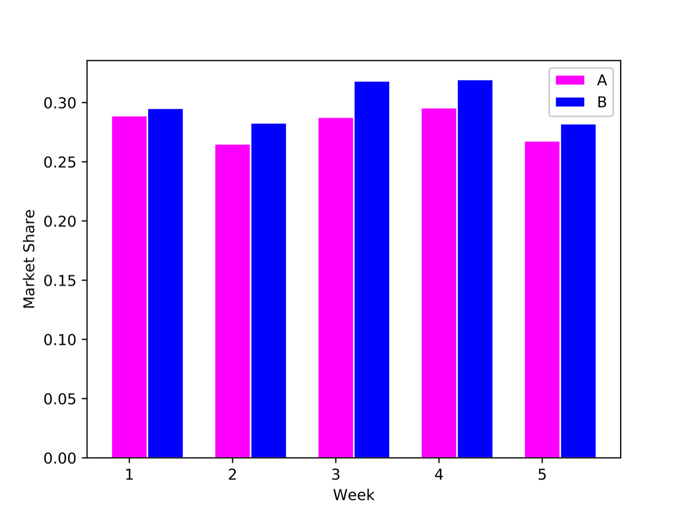
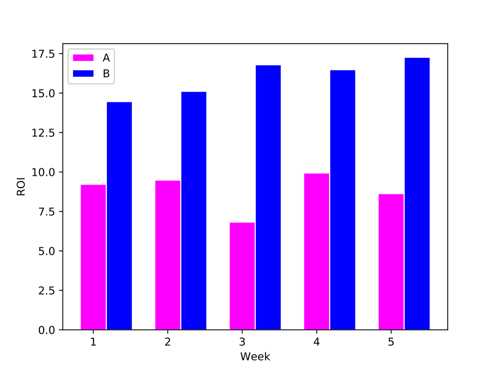

- 双対変数 1 つN 個のセグメントの割引額を、ラグランジュ乗数 \(\lambda\) の二分法でまとめて決める。シミュレーションでは通常 10 回未満の反復で収束し、各反復の計算量は \(O(N)\) である。
- 離散化の誤差 1% 以下割引額を離散的な候補から選ぶ場合も、候補の間隔が 1 以下なら、近似誤差の上限は平均で 1% 以下だった（Table 1）。
- 売上 +6% 以上映画チケットの 5 週間の A/B テストで、均等配分と比べて売上が毎週伸び、平均の伸びは 6% を超えた。論文は、支出が約 40% 少なかったとも述べている。
オンライン事業では、予算を多数の市場セグメントに配り、週ごとや日ごとに配り直す必要がある
論文によれば、従来の事業ではマーケティング予算の配分を年に数回見直せば足りたが、オンライン事業は環境の変化が速く、週ごと、ときには日ごとに配り直す必要がある。市場は商品、顧客、時間などで細かいセグメントに分かれる。たとえば「ある映画館の土曜夜の映画チケット」が 1 つのセグメントになる。
論文の枠組みは 2 段からなる（図1）。まず過去のデータから各セグメントの市場応答（費用をかけたときの売上）を予測し、次にその予測をもとに、総費用の制約のもとで売上が最大になるように予算を配る。アリババグループの複数の事業（映画チケットや地域サービスの日々の販促、ショッピングイベント、金融サービスの金利割引など）で使われているという。

ロジット需要曲線の切片をニューラルネットで文脈から求め、セグメント間で情報を共有する
セグメント \(i\) の売上を、単位あたりのマーケティング費用 \(c\) の関数としてロジット曲線で表す。\(D_i\) は市場の大きさで、過去の統計から前もって求めておく。\(c\) は正なら値引き、負なら値上げを表す。
感度 \(b_i\) が正なら、費用を増やすほど売上が増える。曲線の傾きが最も急になるのは \(\hat c_i = -a_i/b_i\) で、論文はこれを市場コスト（競合を含めた市場全体の平均的な費用）と呼ぶ。市場コストから離れるほど、売上は費用に反応しにくくなる（限界効果の逓減）。論文は、市場コストでの費用弾力性が \(-a_i/2\) になることを示している。
セグメントごとに \(a_i, b_i\) を別々に当てはめると、過去に試した費用の値が少ないセグメントではデータが足りない。そこで論文は、市場コストでの弾力性は文脈変数 \(\boldsymbol{x}_i\)（ブランド、カテゴリ、都市、曜日など）で決まると仮定し、全セグメントに共通のニューラルネット \(e(\boldsymbol{x}_i)\) でこの弾力性を出す。論文はこれを半ブラックボックスモデルと呼んでいる。
費用と売上の関係はロジット曲線の形のまま残るので、次の最適化にそのまま使える。学習では市場シェア \(q_i = d_i/D_i\) についての負の対数尤度を勾配法で最小化する。
変数を市場シェアに置き換えると問題は凸になり、双対変数 1 つの二分法で解ける
各セグメントの単位費用 \(c_i\) を決め、総費用を予算 \(B\) 以下に抑えながら総売上を最大にする。\(B\) が正なら費用の上限、負なら利益の下限を表す。
総費用 \(\sum_i d_i(c_i)\,c_i\) は \(c_i\) について凸ではないので、このままでは解きにくい。論文は価格設定の先行研究にならい、ロジット曲線の逆関数を使って \(c_i\) を市場シェア \(q_i\) の関数に書き換える。すると目的関数は \(q_i\) について線形になり、制約関数は強凸になる。
ラグランジュ乗数 \(\lambda\) を入れて KKT 条件を整理すると、各セグメントの最適な市場シェアは、共通の \(\lambda\) を使って Lambert W 関数で書ける。
つまり、\(N\) 個の変数を探す代わりに \(\lambda\) を 1 つ探せばよい。総費用と予算の差 \(g(\lambda)\) は \(\lambda\) について狭義単調減少なので、\(g(\lambda) = 0\) となる \(\lambda\) を二分法で求められる（図3）。反復回数は対数的にしか増えず、各反復の計算量は \(O(N)\) なので、大規模な問題にも使える。論文によれば、決定変数が数十億ある事業でも扱えているという。

ROI の下限や、割引額を離散的な候補から選ぶ制約も同じ枠組みで扱える
予算額を決めにくい場合は、費用あたりの売上（ROI）が \(R\) 以上という制約に置き換えられる。制約は \(\sum_i \bigl(R\,d_i(c_i)\,c_i - d_i(c_i)\bigr) \le 0\) となり、\(q_i(\lambda)\) の式を少し変えるだけで同じ二分法が使える。このとき予算 \(B\) は要らない。
値引き後の表示価格を 99 ドルや 199 ドルのような 99 で終わる値にそろえたい場合など、\(c_i\) を離散的な候補から選ぶ必要があることも多い。この問題は NP 困難になる。論文はまず連続緩和を解き、その解 \(c_i^*\) をはさむ 2 つの候補（すぐ下とすぐ上）を各セグメントの選択肢として、多選択ナップザック問題（MCKP）を作る。下側の候補だけを選べば予算は必ず守れるので、この MCKP には必ず解がある。MCKP は Dyer と Zemel がそれぞれ提案した \(O(N)\) の近似アルゴリズム（Dyer–Zemel 法）で解く。論文は、候補が少ないときは連続緩和を経ずに、すべての候補を使って直接 Dyer–Zemel 法で解くことも勧めている。
半ブラックボックスモデルは、学習データが少ないときほどロジットモデルより予測誤差が小さかった
このページの数値と図は arXiv v3（2019 年 5 月 22 日）の本文、表、図による。KDD 2019 掲載版（ACM）の本文は取得していないため、照合していない。論文の図は arXiv 版のライセンス（CC BY-NC-SA 4.0）にもとづいて転載した。
応答モデルは 2 つのデータで評価した。Breakfast は公開データで、58 商品 × 77 店舗の約 4 千セグメントについて、156 週分の売上と販促の記録がある。Taopiaopiao は中国の映画チケット販売サービスのデータで、8 千館の映画館を曜日ごとに分けた約 6 万セグメントの 152 日分である。ニューラルネットは幅 16 の全結合層 5 層（ReLU）で、Adam（学習率 0.01、200 エポック）で学習した。
データを時間に沿って学習用とテスト用に分け、学習用の割合を 5% から 95% まで変えて、相対平均絶対誤差（RMAE）を比べた（図4）。論文は、提案モデルがロジットモデルを大きく上回り、特に学習データが少ないときに差が大きいと述べている。理由として、セグメント間で情報を共有できるのでデータ不足が和らぐことを挙げている。なお、Taopiaopiao の学習データ上の誤差（図4(c)）は、学習用の割合が小さい範囲ではロジットモデルのほうが小さい。

シミュレーションでは数回の反復で収束し、パラメータの推定誤差に対しても売上はあまり変わらなかった
\(N = 100\) のセグメントのパラメータを一様分布から生成した（\(D_i \sim \mathcal{U}(0, 100)\)、\(a_i \sim \mathcal{U}(-1, 1)\)、\(b_i \sim \mathcal{U}(0, 1)\)、\(B \sim \mathcal{U}(0, 100N)\)）。二分法は通常 10 回未満の反復で収束した。
\(a_i, b_i\) に最大 20% の推定誤差を加えて配分を計算し、真のパラメータで評価した（1000 回以上のモンテカルロ）。目的関数の誤差は、推定誤差が 20% でも 1% 未満だった。予算のほうが目的関数より敏感で、予算の超過が 5% 未満に収まったのは、\(a_i\) の推定誤差が 10% 未満、\(b_i\) が 5% 未満のときだった。\(b_i\) は決定変数 \(c\) の係数で、\(a_i\) は切片なので、\(b_i\) の誤差のほうが影響が大きいと論文は説明している。
離散化の近似誤差の上限は、候補の間隔が小さいほど小さかった（図5）。間隔が 1 以下なら 1% 以下だが、間隔が 8 になると約 50% まで大きくなる。論文は、これは上限であり、実際の誤差が大きいとは限らないと述べている。2 つの解き方の配分はほとんどの場合同じだった。
映画チケットの 5 週間の A/B テストでは、均等配分より売上が平均 6% 以上伸び、ROI も大きく上がった
Taopiaopiao の日々の販促では、割引額を映画館と曜日の組（セグメント）ごとに決める。費用の上限は週ごとに更新し、週の初めに配分を計算したあと、残りの予算に合わせて毎日配り直す。99 で終わる価格が好まれるため、離散の制約も入る。
外れ値の映画館を除いたうえで 400 館を無作為に選んで A 群とし、過去のデータと文脈の特徴が最も近い映画館を 1 館ずつ対応させて B 群を作った。A/A テストで両群の売上と反応が似ていることを確かめてから、5 週間の A/B テストを行った。両群の週ごとの費用上限は同じで、A 群は均等に配分し、B 群は論文の方法で配分した。
B 群の売上（市場シェア）は毎週 A 群を上回り、平均の伸びは 6% を超えた（図6）。アルゴリズムは毎回、二分法の早期終了条件 \(f(\lambda_l) - f(\lambda_r) \le \epsilon'\) で止まった。論文の説明では、費用の上限は担当者が経験で決めたもので、わずかな売上の伸びのために上限まで使う必要はなかった。そのため B 群の支出はずっと少なく、ROI の改善は平均で 40% を超えた（図7）。論文はまとめとして、支出を 40% 減らしながら売上を 6% 以上伸ばせたと述べている。両群の実際の支出は同じではない点に注意が要る（解説者の注）。


個人の効果ではなくセグメントの応答曲線を推定し、予算の上限を双対変数で守る
この論文が推定するのは、セグメント（映画館と曜日の組、店舗と商品の組など）ごとの、単位費用 \(c\) に対する売上のロジット曲線である。個人の処置効果は推定しない。モデルは過去の観測データに当てはめるもので、費用の決め方と売上の交絡を補正する因果推論の手法は使っていない。論文は関連研究の節で、共変量シフトのためにブラックボックスの予測では費用と売上の関係を捉えにくいと述べ、因果推論を関連する話題として挙げている。
費用は単位費用と売上の積 \(d_i(c_i)\,c_i\) で、売れた分にだけかかる。処置は「配る・配らない」の二値ではなく、連続の割引額（負なら値上げ）で、離散的な候補から選ぶ場合も扱う。評価はシミュレーションと 2 つのデータでの予測誤差、1 つの事業での A/B テストである。
予算制約は、総費用が \(B\) 以下という硬い制約として最適化に入れ、利益の下限や ROI の下限にも置き換えられる。KKT 条件から、\(\lambda\) は「費用を 1 単位増やしたときの売上の増分」にあたり、最適解ではどのセグメントでもこの値が \(\lambda\) にそろう。予算のもとで ROI（効果 ÷ コスト）の高い順に割り当てる方法は、選択肢が「配る・配らない」の 2 つしかないナップザック問題の連続緩和の解である。この論文の方法は、それを応答が連続な曲線で与えられる場合に広げたものとみることができる。離散の場合に使う Dyer–Zemel 法も、MCKP の線形緩和を解く方法として知られている（以上、解説者の注）。
@inproceedings{zhao2019unified,
title = {A Unified Framework for Marketing Budget Allocation},
author = {Zhao, Kui and Hua, Junhao and Yan, Ling and Zhang, Qi and Xu, Huan and Yang, Cheng},
booktitle = {Proceedings of the 25th ACM SIGKDD International Conference on Knowledge Discovery \& Data Mining},
pages = {1820--1830},
year = {2019},
publisher = {ACM},
doi = {10.1145/3292500.3330700}
}